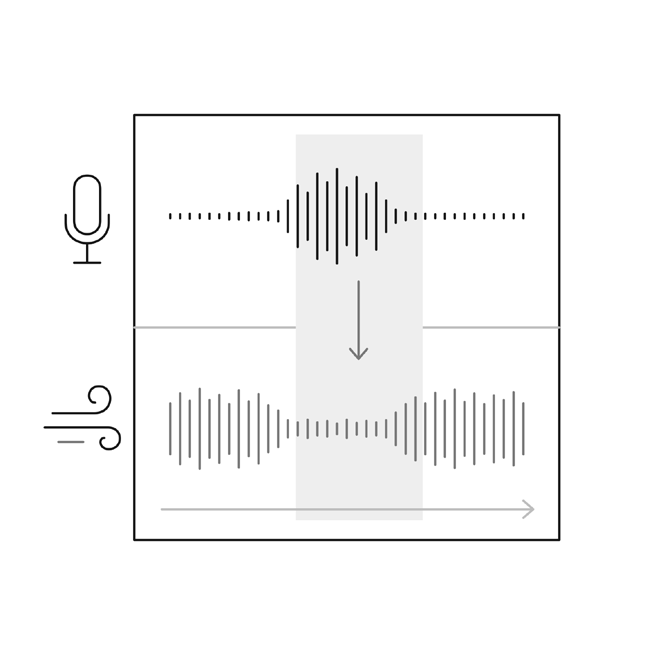
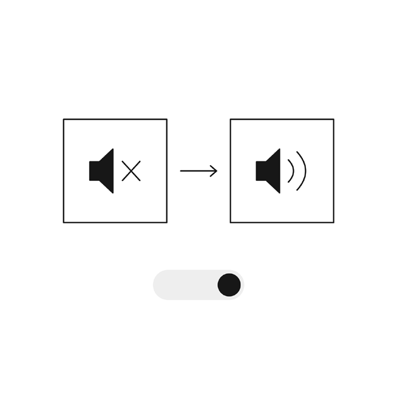

공통 · 사운드
사운드
사용 도구 · ElevenLabs
인물의 대사와 마을의 환경음, 이동에 반응하는 발걸음을 함께 구성했습니다. 대사를 듣는 동안에는 환경음이 목소리를 가리지 않도록 음량을 조정하고, 소리를 끈 상태에서도 대사 패널로 내용을 읽을 수 있게 했습니다.
인물 음성
ElevenLabs로 인물의 나이와 생활 배경에 맞는 목소리를 만들었습니다. 기획에서 작성한 가상의 증언을 음성으로 제작해, 관람객이 인물을 만날 때 석사자의 눈매·얼굴 윤곽·갈기·수염·털결에 관한 단서를 듣도록 구성했습니다.
- 장사꾼 · 28–33세
- 공주목을 오가며 소문을 전하는 장사꾼.
- 농민 · 37–42세
- 토지 문제로 관아를 찾아온 농민.
- 찬모 · 35세 이상
- 객사에서 음식을 맡아 하는 찬모.
- 주민 삼총사 · 17–20세
- 서로 투닥거리며 집으로 돌아가는 세 주민.
- 나무꾼 · 45–50세
- 봉황산에서 나무를 하고 돌아오는 나무꾼.
환경음과 효과음
- 마을 소리 · ElevenLabs Sound Effects
- 멀리서 들리는 사람들의 말소리를 마을 이동 구간에 사용했습니다.
- 바람·새소리·사계절
- 바람과 새소리, 계절별 환경음을 장면에 맞춰 배치했습니다.
- 스크롤에 반응하는 발걸음
- 관람객이 스크롤로 장면을 이동할 때 발걸음 효과음이 함께 들리도록 구성했습니다.
- 대사와 환경음의 균형
- 대사가 재생되는 동안에는 환경음의 음량을 낮춰 목소리가 묻히지 않게 했습니다. 대사가 끝나면 원래 음량으로 돌아오도록 조정했습니다.

소리 없이도 이어지는 감상
- 소리 켜기와 끄기
- 주변 상황에 따라 소리를 재생하기 어려울 수 있어 음소거 버튼을 배치했습니다. 사용자는 감상 중 소리를 켜거나 끌 수 있습니다.
- 대사 패널
- 인물의 음성과 함께 대사 패널을 표시했습니다. 소리를 끈 상태에서도 인물의 말을 읽고 석사자의 특징에 관한 단서를 확인할 수 있습니다.
